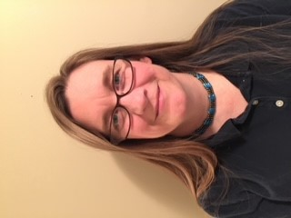

About Me
I have been with Ford Motor Credit for 25 years, started in Loss Prevention for eight years. The following ten years, I worked in the Titles Department and helped build tools that assisted in our processes. For the past seven years, I have been in Credit Reanalysis and I am the subject matter expert in Transfers. I have trained most of my Nashville team. I continue to assist with FCGBC in learning the process. In 2016, I decided to return to college and learn more about computers. I took a couple of internetworking classes then took Introduction to Web Development and Python. That is when I decided that my next career would be software engineering. I enjoy creating things that will help people. I continue to study coding outside of school, with applications like Mimo and Sololearn. As a Lifetime Girl Scout member, I am always trying to find better ways to do things that leave a smaller footprint in our world. I enjoy teaching new innovative ways to do things.
My Goals
I've been interested in a career as a software engineer since I decided to return to college. I'm currently working on my bachelor's degree in Information Technology and Networking with concentrations in Web Development, Mobile Applications, and Cybersecurity. I want to learn to create programs that help people connect and make their lives fuller. We need to be at the top of our knowledge gain and grow as our world changes to a more digital lifestyle. Life is about learning, and learning is life.